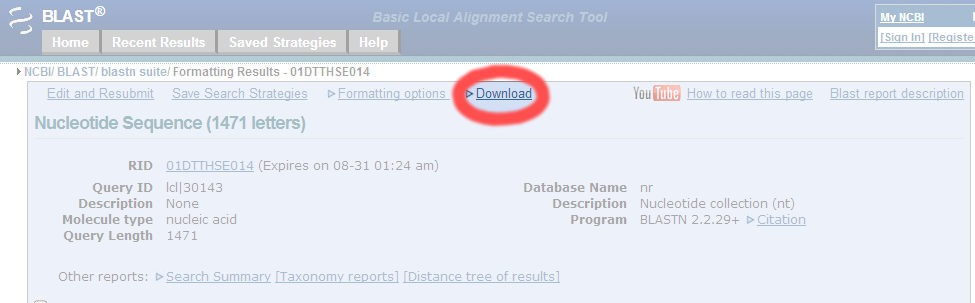
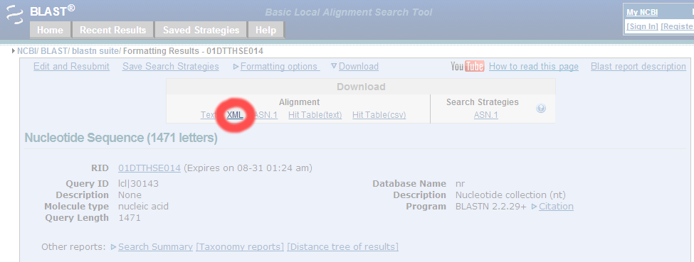
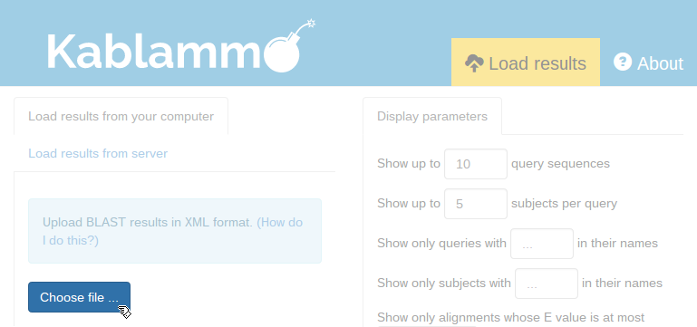

To learn how to use Kablammo, please take the tour.
If you are using the web-based NCBI BLAST, you must download its results in XML format before you can load them into Kablammo.

First, click the Download link on the NCBI BLAST results page.

Now, click the XML link to download results in XML format.

Finally, click on Load results in Kablammo, then click the Choose file ... button and choose the Load results from your computer tab. Select the XML file you just downloaded from NCBI BLAST, which will likely be by default in your downloads directory.
If you are running BLAST yourself from the command line,
simply specify the -outfmt 5 parameter to output
results in XML format. An example command, then, would be thus:
blastn -query seqs.fa -db some/blast/db -outfmt 5 -out results.xmlOnce BLAST finishes, click Load results in Kablammo, choose the Load results from your computer tab, then click the Choose files ... button and select the XML file that BLAST created.
If you want the BLAST results to be viewable from other computers (such as when BLAST is running on a central lab server instead of your own machine), read the Serving BLAST results section in Kablammo's README.
Kablammo was created with loving attention to each handcrafted detail by the Wasmuth Lab. Made fresh each day using only local ingredients. Mmm, tasty.
Kablammo's source code is available on GitHub.
Jeff Wintersinger (web site, Twitter) wrote Kablammo. He also proposed the project's brilliant name.
James Wasmuth (e-mail, Twitter) supervised Kablammo's creation. He eventually acquiesced to calling it Kablammo.
Kablammo helps you create interactive visualizations of BLAST results from your web browser. Find your most interesting alignments, list detailed parameters for each, and export a publication-ready vector image, all without installing any software.